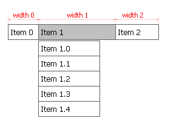

|

The width of selected menu item in pixels. This parameter can be used to adjust the horizontal size
of the menu item to the length of the text, paddings and HTML elements inside it.
This allows efficient horizontal space utilization.
This setting is applied to currently selected item only. When changing this parameter in
- Tigra Menu PRO in horizontal blocks make sure to adjust the horizontal offset of the next item in the block (if any).
Without that longer item will be partially covered by next item and shorter item will have a gap to its side;
- Tigra Menu PRO in vertical blocks make sure to adjust the width of other items int the same block (if any).
Without that block will not appear rectangular;
- Tigra Menu GOLD this parameter is only available in horizontal blocks. Use Block Width
to locally redefine the width of vertical block.
By default the width is inherited from the level settings.
|